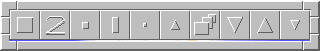
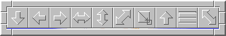
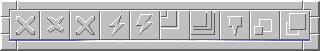
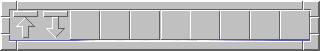

Fvwm gives you lots of ways to decorate the buttons in the title bar. Vector buttons are images drawn using the buttons shadow and highlight colors. This page shows some of the vector buttons that have been contributed to fvwm.
Click on the image to view the file that drew that titlebar or shift click to download the file.
|  |
|  |
|  |
|  |
Jos van Riswick has created a Perl script that lets you use xfig to design your fvwm vector buttons and covert them to fvwm vector buttons. You can get it HERE.